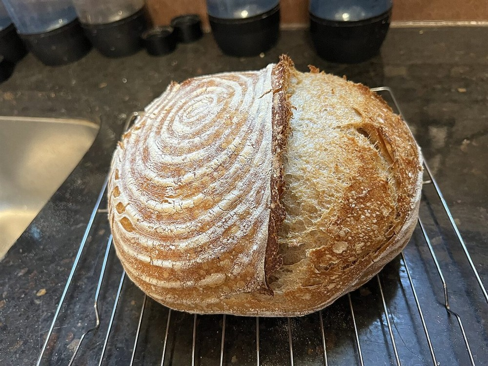
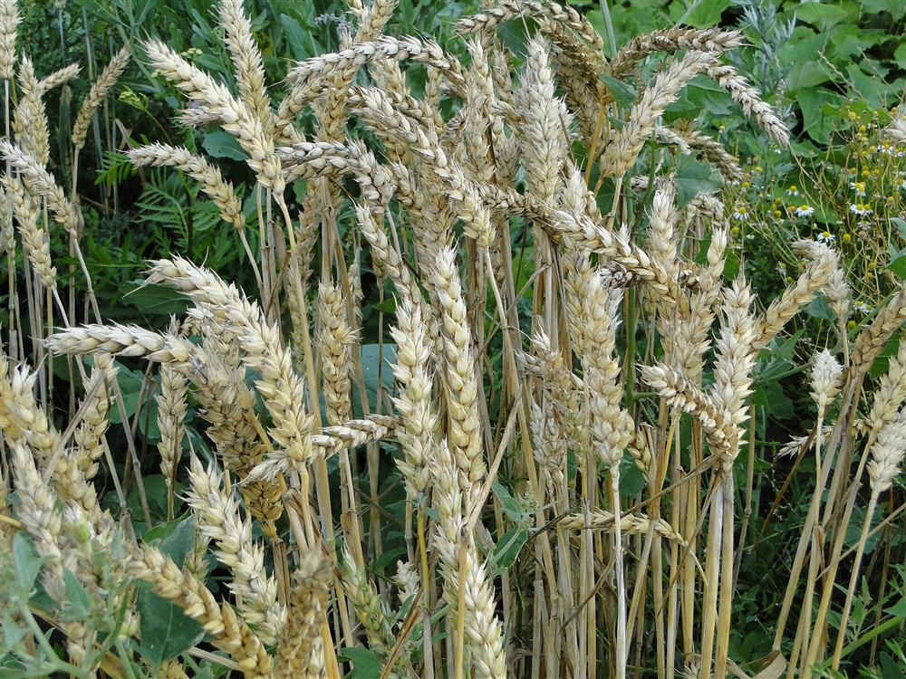
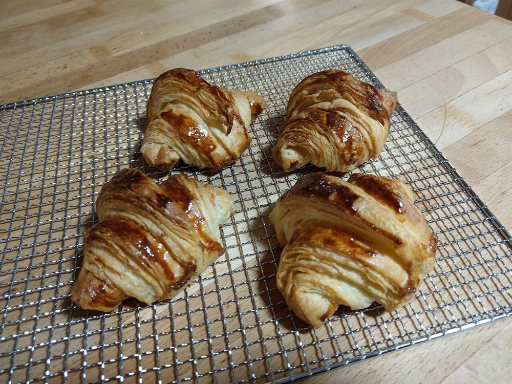
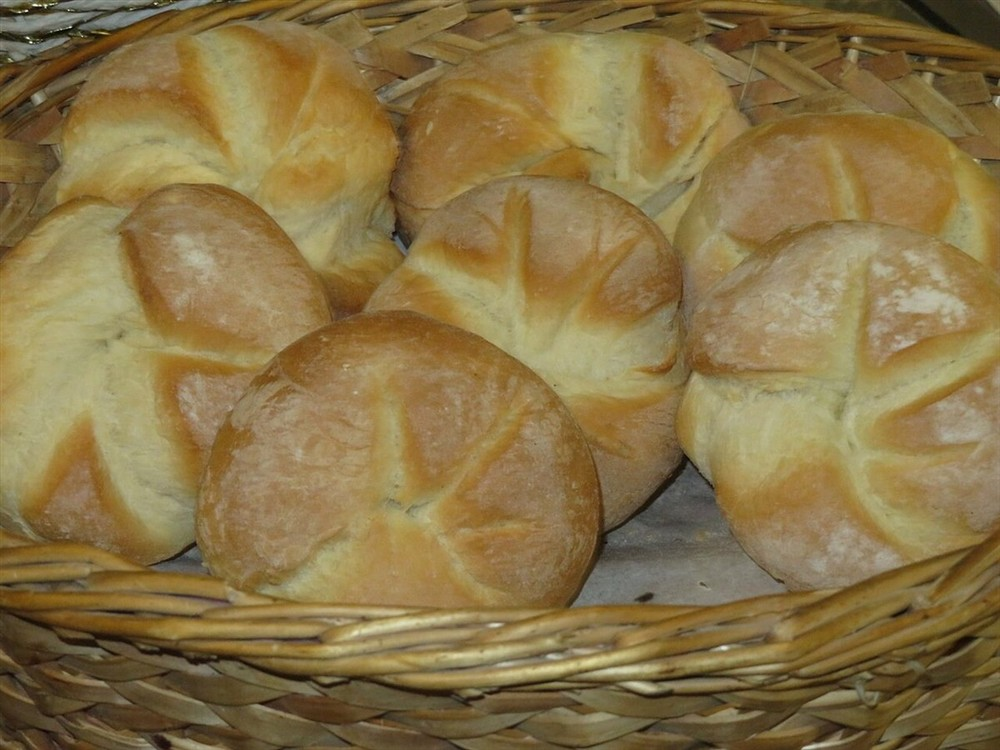
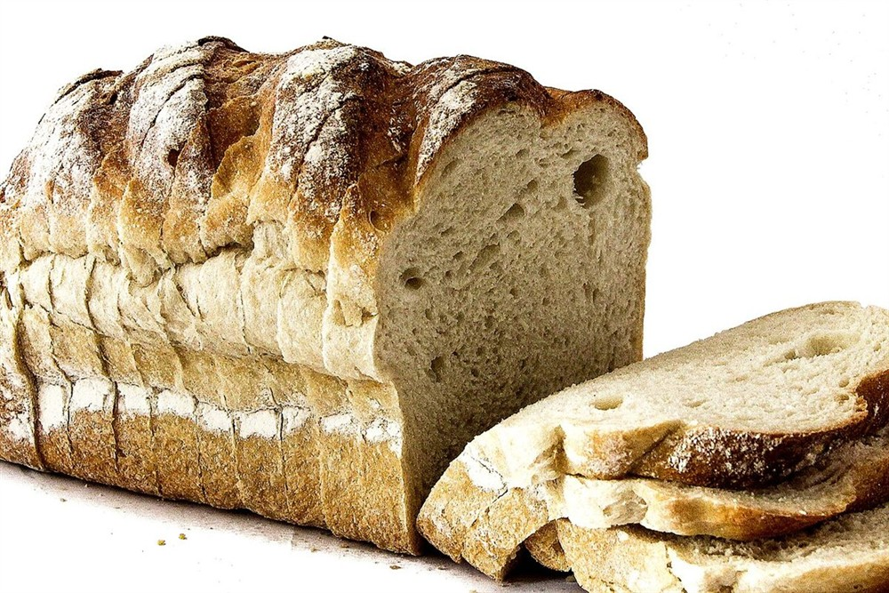

お店のことABOUT
パンセゾンは、新京成線・二和向台駅のそばにあるパン屋です。2023年9月21日にグランドオープンしたと、地域の情報サイトで紹介されています。毎日小麦からこね上げ、ゆっくり熟成させた香り豊かなパンが特長とされています。
お店の名前の意味や、オーナーさんの想いについては確認できていません。このページはその点を断定せず、小麦の香りと熟成の時間を軸にした雰囲気でまとめた試作です。



パンのご紹介BREAD
紹介記事などで、次のようなパンが並ぶと伝えられています。品ぞろえは日によって変わるため、最新の情報はInstagramをご覧ください。




季節ごとに顔ぶれが変わる楽しさを、四季の写真で添えました(いずれもイメージです)。


営業時間・定休日: 準備中
口コミVOICE
イメージ例
外はさっくり、中はしっとり。朝のうちに買いに行きたくなるパンです。
ご来店のお客様(創作)
イメージ例
駅から近くて寄りやすく、帰り道に少しだけ幸せになれます。
ご来店のお客様(創作)
イメージ例
小麦の香りがして、翌朝のトーストまで楽しみになりました。
ご来店のお客様(創作)
上の口コミはイメージ例であり、実在のお客様の声ではありません。
アクセスACCESS
- 住所
- 〒274-0805 千葉県船橋市二和東５丁目２５−３４
- 電話
- 準備中
- 営業時間
- 準備中
- 定休日
- 準備中
- @pain.saisons4
掲載の写真はフリー素材のイメージで、店舗の実際の様子・商品ではありません。
写真クレジットCREDITS
- loaf.jpg「Sourdough Bread Loaf」Agelaia / CC BY 4.0
- wheat.jpg「Wheat stalks」Quer / CC0 1.0
- sour.jpg「Slices of sourdough bread」Angel Ganev / CC BY 2.0
- round.jpg「Sourdough Loaf (217346645)」Dana Hutchinson / CC BY 3.0
- croissants.jpg「Croissant hk DIY」SUBARU sti 2020 / CC BY-SA 4.0
- rolls.jpg「Bread from the wood-fired oven, Sant Esteve de Guialbes」Juan Emilio Prades Bel / CC BY 4.0
- freshbread.jpg「Fresh made bread 06」FranHogan / CC BY-SA 4.0
- tin.jpg「Tin Loaf - one slash in the crust」Mike Finn / CC BY 2.0
- tulips.jpg「Spring Tulips (153795123)」Marta Borowiecka / CC0 1.0
- sunflower.jpg「Sunflower close-up15」Alan Levine / CC0 1.0
- maple.jpg「Lonely Maple Leaf」Pete Markham / CC BY-SA 2.0
- frostfence.jpg「Dülmen, Hausdülmen, Zaun einer Wiese -- 2021 -- 5073-7」Dietmar Rabich / CC BY-SA 4.0